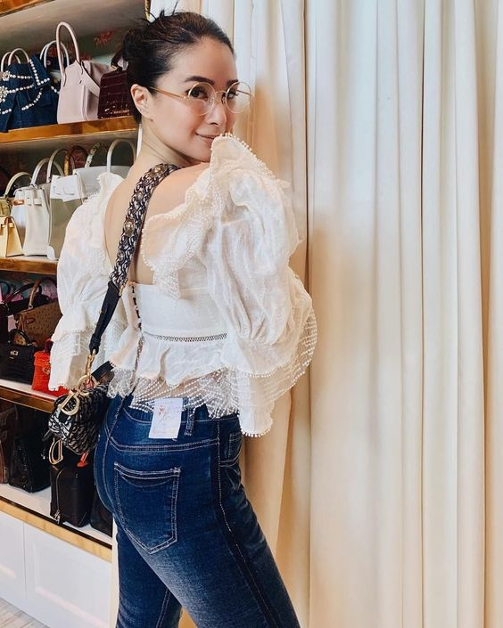

FASHION
Elevate Your Style,
Redefine Your Identity
Feb 20 2024 | Isaiah Quejadas
Clothes will make you shineClothing styles are a form of self-expression and adornment. Some people stay away from the mainstream fashion; either of their own preference or to remain one of a kind. Many people, however, get their style by imitating the actors and actresses they see on TV. If you're on of such people, then here are some styles which you can imitate. Get Started→ |
Fashion Icons
From global celebrities to lesser-known local favorites
Heart Evangelista
Francisco Lachowski
Tricia Gosingtian
Secrets of your fashion celebrities
Socialite
Heart
Evangelista
Businesswoman, Model,
and Actress
|
No surprise that the elegant Heart Evangelista makes an appearance on this article. How many women do you know go to Heart's Instagram page for fashion and outfit ideas? Check which products or brands she's using? No Filipino celebrity quite has the same reach that Heart does. Her glam team has done her wonders on cementing her place as an icon in Philippine pop culture. But perhaps what truly sets Evangelista apart is her authenticity. Despite her status as a style icon, she remains refreshingly down-to-earth and relatable, sharing glimpses of her life beyond the glitz and glamour of the spotlight. Whether she's bonding with her beloved pet dogs or giving back to the community through her philanthropic endeavors, she uses her platform to spread positivity and inspire others to embrace their own unique sense of style. |
 |